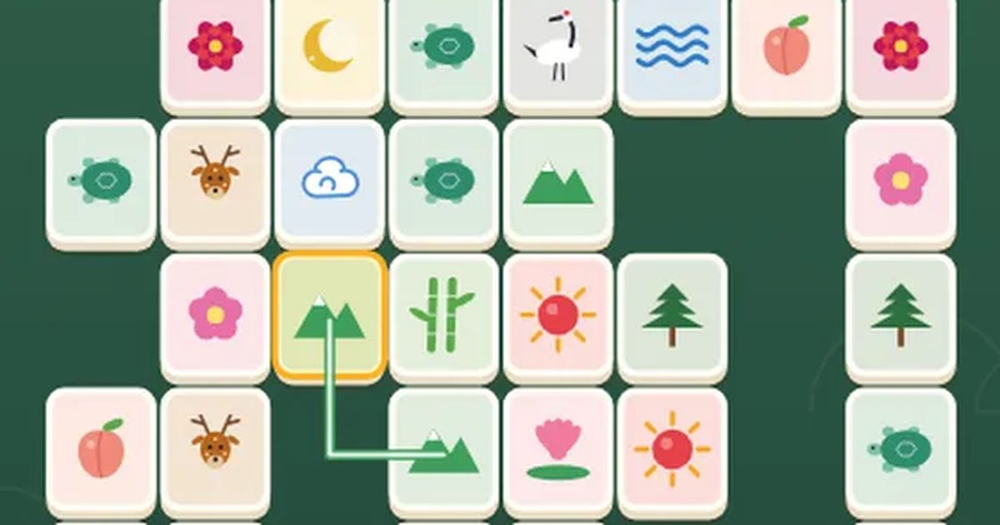

십장생 짝맞추기
Longevity Pairs
짝맞추기 · 두 번 꺾어 잇기무료설치 없음폰 · PC
▶ 지금 바로 하기로그인 없이 브라우저에서 바로 시작돼요
어떤 게임인가요?
같은 그림 두 장을 골라, 두 번까지만 꺾이는 선으로 이어지면 사라져요. 판을 모두 비우면 성공! 막히면 저절로 섞어 줘요. 해·달·학·거북 같은 십장생 그림을 모아 도감과 병풍을 완성하세요.
목표 · 같은 그림 패 두 장을 골라 이어 지우고, 판을 모두 비우세요.
게임 방법
- 같은 그림 두 장을 차례로 누르면, 두 패 사이를 이을 수 있을 때 함께 사라져요.
- 잇는 선은 빈칸으로만 지나가고, 두 번까지만 꺾일 수 있어요. 판 바깥 테두리를 돌아가도 돼요.
- 더 이을 짝이 없으면 남은 패를 저절로 섞어 줘요.
- 빨리 비울수록 별이 많아요. 💡 힌트를 쓰면 별 1개.
- 처음 맞춘 그림은 십장생 도감에 들어가요. 한 장(8단계)을 다 깨면 병풍 한 폭 완성.
- ⚡ 고수 도전: 90초에서 시작해 짝 하나 +2초(3연속부터 +3초), 한 판 비우면 +20초. 판은 점점 커지고, 2판부터는 짝을 맞출 때마다 남은 패가 아래 · 왼쪽 · 위 · 오른쪽으로 무너져 내려요. 힌트 -10초, 섞기 -5초. 몇 쌍까지 맞출 수 있을까?
등장하는 것들
- 해 · 십장생
- 학 · 십장생
- 거북 · 십장생
- 사슴 · 십장생
- 호랑이 · 민화
- 까치 · 민화
공략 팁
- 가장자리 패는 테두리로 돌아 이어지기 쉬워요. 바깥부터 지우세요.
- 같은 그림이 4장이면 어느 둘을 먼저 지울지 생각해 보세요.
- 가운데를 막고 있는 패를 먼저 지우면 길이 넓어져요.
 제기차기
제기차기 필살 격투
필살 격투 코너킹 드리프트
코너킹 드리프트 폴짝 개구리
폴짝 개구리 링 파이터
링 파이터 승부차기
승부차기